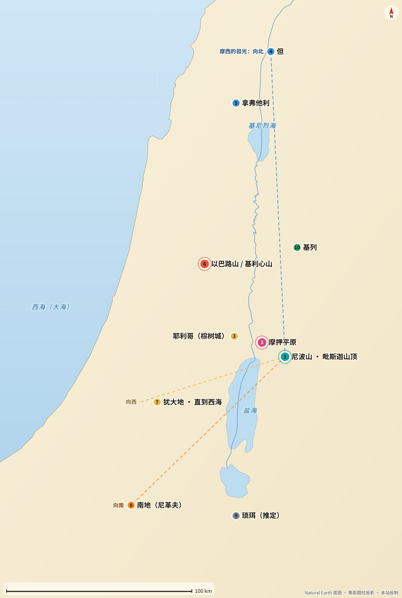

📜 第五卷 · 34 章 · 圣约更新之书
申命记 Deuteronomy · דְּבָרִים 一句话：在进入应许之地之前，摩西向新的一代重述神的作为与律法，呼召他们尽心爱耶和华、拣选生命，并以圣约更新的方式把百姓交给约书亚。 「申命」= 再次申明（希腊文 deuteronomion「第二律法」，源自七十士译本对17:18「律法书的副本」的翻译）。
⭐ 重点 🧩 难点 ✝️ 指向基督 🤝 圣约 🏺 真实背景 🌍 近东文化 🌱 应用 📜 信条原文（CCI 逐字）
笔记标记图例 核心教义 红底 · 红实线钥节金句 金底 · 金实线历史背景 蓝底 · 蓝实线基督 / 圣约 紫底 · 紫实线生活应用 绿底 · 绿实线难点疑义 玫红底 · 虚线波浪线 特别提醒 / 易混点📜 ❤️ ⛰️
⭐ 钥节与一句话 01 「以色列啊，你要听！耶和华―我们神是独一的主。你要尽心、尽性、尽力爱耶和华―你的神。— 申6:4-5（和合本） 「耶和华专爱你们，拣选你们，并非因你们的人数多于别民，原来你们的人数在万民中是最少的。只因耶和华爱你们，又因要守他向你们列祖所起的誓，就用大能的手领你们出来，从为奴之家救赎你们脱离埃及王法老的手。— 申7:7-8（和合本） 他苦炼你，任你饥饿，将你和你列祖所不认识的吗哪赐给你吃，使你知道，人活着不是单靠食物，乃是靠耶和华口里所出的一切话。— 申8:3（和合本） 耶和华―你的神要从你们弟兄中间给你兴起一位先知，像我，你们要听从他。— 申18:15（和合本） 「隐秘的事是属耶和华―我们神的；惟有明显的事是永远属我们和我们子孙的，好叫我们遵行这律法上的一切话。」— 申29:29（和合本） 耶和华―你神必将你心里和你后裔心里的污秽除掉，好叫你尽心尽性爱耶和华―你的神，使你可以存活。— 申30:6（和合本） 我今日呼天唤地向你作见证；我将生死祸福陈明在你面前，所以你要拣选生命，使你和你的后裔都得存活；— 申30:19（和合本） 以后以色列中再没有兴起先知像摩西的。他是耶和华面对面所认识的。— 申34:10（和合本） 「回顾 · 重申 · 抉择 · 交接」1–4 回顾历史 → 5–26 重申律法 → 27–30 祝福咒诅、拣选生命 → 31–34 交接、诗歌、祝福、摩西之死
🏺 背景 02 作者 摩西（1:1；31:9、22、24）；34章摩西之死由后人（犹太传统认为约书亚）在默示下补记。 时间 第四十年十一月初一（1:3），约前1406年，约一个月内（参34:8 哀哭三十日，书4:19 正月初十过约旦河）。 地点 约旦河东摩押平原，「在约旦河东的摩押地」（1:5）；毗斯迦山顶（34:1）。 读者 在旷野出生长大的新一代：他们没有亲身经历出埃及时的大部分事件，却要以「今日」的身份与神立约（5:3；29:14–15）。 ⭐ 重点 · 三篇讲章
① 1:6–4:43 回顾：神的信实与百姓的不信；② 4:44–28:68 律法：十诫（5）与示玛（6），条例（12–26），祝福与咒诅（27–28）；③ 29–30 圣约更新：「我今日以天地向你作见证……你要拣选生命」。之后 31–34：约书亚、摩西之歌、摩西的祝福、摩西之死。
📑 结构：古代宗主条约的形式 03 序言 「以下是摩西……对以色列众人所说的话」 1:1–5
历史引言 从何烈山到摩押：宗主的恩惠 1:6–4:49
总纲条款 十诫与示玛：全心的忠诚 5–11
具体条款 敬拜、领袖、社会、家庭 12–26
祝福与咒诅 基利心山与以巴路山 27–28
立誓与见证 「呼天唤地作见证」 29–30；31:28
存放与宣读 每七年在住棚节宣读 31:9–13、26
继承安排 约书亚接续 31:7–8；34:9
🌍 古代近东文化 · 克莱恩（M. G. Kline）的贡献
威斯敏斯特神学院的克莱恩在《Treaty of the Great King》（1963）中指出：申命记的整体结构与公元前2千纪的赫梯宗主条约高度相似（尤其「历史引言」一项，在前1千纪的亚述条约中通常缺乏），这支持申命记的早期（摩西时代）成书，而非约前7世纪约西亚时代的「虔诚伪作」。另有学者比较前672年亚述王以撒哈顿的继承条约中的咒诅（与申28 相似）。
条约要素 赫梯宗主条约（前14–13世纪） 申命记 宗主与附庸 大君王与小王 耶和华与以色列（「你的神」） 历史引言 宗主过去的恩惠 出埃及、旷野供应 基本要求 唯独忠于宗主、不得另结盟约 「你要尽心、尽性、尽力爱耶和华」；「除了我以外，你不可有别的神」 见证 众神 「天地」（30:19；32:1）与「这律法书」（31:26） 文本存放 放在双方神庙 约柜旁（31:26）
🎯 为什么写：爱与记念 04 ⭐ 重点 · 记念
「你也要记念耶和华你的神在旷野引导你这四十年」（8:2）。「记念」「不可忘记」在申命记中反复出现。
⭐ 重点 · 爱
「爱」是申命记的中心词：神因爱拣选（7:8），百姓要以爱回应（6:5；10:12；30:6）。
⭐ 重点 · 今日
「今日」出现数十次：圣约不是历史博物馆，而是每一代的现在式（5:3）。
⭐ 重点 · 拣选生命
「我将生死祸福陈明在你面前……所以你要拣选生命」（30:19）。
🧩 难点 · 拣选的根据不在以色列
「耶和华专爱你们，拣选你们，并非因你们的人数多于别民」（7:7）；「并不是因你的义……乃是因这些国民的恶」（9:5）。多特信经第一项第8条以申7:7为经文出处之一：
多特信经 第一项教义 论神的拣选与弃绝 · 第八条 拣选定旨的唯一性
拣选只有一种。无论是在旧约之下还是在新约之下，得救之人的拣选定旨都是同一个，没有多个，因为圣经宣告说，神旨意的美意、目的和计划只有一个1 。
按此旨意，他已在永恒中拣选我们得恩典、得荣耀，也预定我们得拯救、走他为我们预备的得救之道2 。
经文出处：1. 申7:7；9:6；弗1:4-5；2. 弗2:10
❤️ 示玛（申6:4–9）：以色列的信仰告白 05 我今日所吩咐你的话都要记在心上，也要殷勤教训你的儿女。无论你坐在家里，行在路上，躺下，起来，都要谈论。也要系在手上为记号，戴在额上为经文；又要写在你房屋的门框上，并你的城门上。」— 申6:6-9（和合本） ⭐ 重点 · 「独一」
「耶和华我们神是独一的主」：神只有一位（比利时信条1，其经文出处包括申6:4）。新约的三一神论不是否定示玛，而是在示玛中承认父、子、圣灵（林前8:6；比利时信条8–9）。
🌱 应用 · 家庭的门徒训练
「殷勤教训你的儿女……都要谈论」：家庭敬拜、要理问答、主日学都扎根于此。海德堡要理问答第103问的经文出处正以「申6:4-9,20-25」开头。
✝️ 指向基督 · 耶稣以申命记胜过试探
太4：三次回答都出自申命记——8:3（人活着不是单靠食物）、6:16（不可试探主）、6:13（当拜主你的神）。耶稣是那位在旷野中忠心的「以色列」。
比利时信条 第一条 论只有一位神
我们都心里相信、口里承认1 只有一位神。他是纯粹2 的灵3 ；他是永恒4 的，是不可测透5 、不可见6 、不改变7 、无限8 的，是全能9 、全智10 、公义11 、良善12 的，是盈溢一切美善的泉源13 。
经文出处：1. 罗10:10；2. 申6:4；林前8:4,6；提前2:5；3. 约4:24；4. 诗90:2；5. 罗11:33；6. 西1:15；提前6:16；7. 雅1:17；8. 王上8:27；耶23:24；9. 创17:1；太19:26；启1:8；10. 罗16:27；11. 罗3:25-26；罗9:14；启16:5,7；12. 太19:17；13. 雅1:17
多特信经 第五项教义 真信徒能持守信仰 · 第十四条 神使真信徒持守信仰所用的方法 · 经文出处：申6:20-25
正如神喜悦藉着福音的宣讲在我们身上开始这恩典之工，同样他也藉着听道、读经1 ，默想经文、圣经的劝勉、警告和应许2 以及圣礼这些方法来维持、继续并完成这恩典之工3 。
经文出处：1. 申 6:20-25；2. 提后 3:16-17；3. 徒 2:42
⚖️ 条例（12–26）：十诫的展开 06 许多学者（如 S. Kaufman, 1979）观察到 12–26 章的条例大致按十诫顺序排列，可作为学习框架（属学者的观察，并非经文明言）：
十诫 申命记条例（大致） 主题 1–2 诫 12–13 唯一的敬拜之处；除灭偶像；假先知 3 诫 14:1–21 圣民的名分：不按外邦人的方式哀悼；洁净的食物 4 诫 14:22–16:17 什一、豁免年、节期 5 诫 16:18–18:22 权柄：审判官、君王、祭司、先知 6 诫 19–21:9 逃城、战争、不知凶手的命案 7 诫 21:10–23:14 家庭、婚姻、贞洁 8 诫 23:15–24:7 财物、贷款、拐带人口 9 诫 24:8–25:4 公正、工价、拾取遗穗 10 诫 25:5–26:19 产业、初熟的果子、内心的感恩
✝️ 指向基督 · 像摩西的先知（18:15–19）
彼得（徒3:22–23）、司提反（徒7:37）都说这指向基督。海德堡31问：基督是「
我们的大先知和教师 」。
✝️ 指向基督 · 挂在木头上的（21:23）
「基督既为我们受了咒诅，就赎出我们脱离律法的咒诅；因为经上记着：凡挂在木头上都是被咒诅的」（加3:13）。
🏺 真实背景 · 君王的律法（17:14–20）
禁止多加马匹、妃嫔、金银；要抄写律法书。所罗门正好违反这三项（王上10–11）。
🗺️ 地图与历史：毗斯迦眺望 · 支派地业预览 07 摩西在毗斯迦山顶所看见的 🎨 情景示意图（离线） 🧭 概念方位图（离线） 🗺️ 真实地理底图（离线） 🌐 实时地图（可换底图）
外约旦得胜：亚嫩河 → 希实本（西宏）→ 以得来（噩）→ 摩押平原
约旦河
盐海
亚嫩河（界河）
希实本 · 西宏
以得来 · 巴珊王噩
摩押平原 / 什亭
巴兰四次祝福
尼波山：摩西观望
民21–36；申2–3。河东之地先作「首付」，却也成为两支派半「先安顿、后争战」的试验（民32）。
🎨 外约旦征服示意图（离线示意图，不依赖网络） 尼波山 · 毗斯迦山顶 申34:1 摩押平原 申1:1–5 以巴路山 / 基利心山 申11:29；27 耶利哥（棕树城） 申34:3 但 申34:1 拿弗他利 申34:2 犹大地 · 直到西海 申34:2 南地（尼革夫） 申34:3 琐珥（推定） 申34:3 基列 申34:1 摩西的目光：向北 向西 向南 1 2 3 4 5 6 7 8 9 10 申命记 34 章：摩西在毗斯迦山顶所看见的应许之地（概念图：按经纬度投影的城市位置，不绘海岸线；编号与真实地图、下方列表一致；箭头为示意方向） 
🗺️ 申命记 34 章：摩西在毗斯迦山顶所看见的应许之地 🔍 全屏 / 放大查看 真实地理底图：Natural Earth（公有领域）海岸线、河流、湖泊，本站本地绘制，无第三方地图服务。三条虚线示意申34:1–3 中摩西从毗斯迦山顶向北、西、南的远眺。古代地点多为学界通行推定，标“推定/有争议”处尚无定论。
1 尼波山 · 毗斯迦山顶 Mount Nebo / Pisgah · 申34:1 2 摩押平原 Plains of Moab · 申1:1–5 3 耶利哥（棕树城） Jericho · 申34:3 4 但 Dan · 申34:1 5 拿弗他利 Naphtali · 申34:2 6 以巴路山 / 基利心山 Ebal / Gerizim · 申11:29；27 7 犹大地 · 直到西海 Judah to the Western Sea · 申34:2 8 南地（尼革夫） Negev · 申34:3 9 琐珥（推定） Zoar · 申34:3 10 基列 Gilead · 申34:1 底图来源 CARTO Voyager OpenStreetMap Humanitarian OSM CARTO 浅色 CARTO 深色 Esri 卫星影像 Esri 地形图 Esri 街道图 OpenTopoMap 进入视野并打开此页后再加载 · 失败将自动切换下一源
🌐 实时地图：申命记 34 章：摩西在毗斯迦山顶所看见的应许之地 · 可切换 9 种无需密钥的全球底图（OSM / CARTO / Esri / OpenTopoMap 等）。瓦片需网络；若当前源失败会自动换源。离线请看「情景示意图」与「真实地理底图」。 🏺 真实背景 · 历史背景
尼波山（毗斯迦）可西望约旦河谷与犹大山地。 申34:1–3 按北、西、南描述视野，是地理实录的语气。 摩西死在摩押地，坟墓不为人知——先知再大，也不能自己进入安息，指向那位更大的先知。 🌍 古代近东文化 · 文化特征
近东君王常在高处立碑；此处却是神让仆人「看见却不进去」，恩典与审判并存。
摩西从摩押平原登尼波山，上了那与耶利哥相对的毗斯迦山顶。耶和华把基列全地直到但，拿弗他利全地，以法莲、玛拿西的地，犹大全地直到西海，南地和棕树城耶利哥的平原，直到琐珥，都指给他看。耶和华对他说：「这就是我向亚伯拉罕、以撒、雅各起誓应许之地，说：『我必将这地赐给你的后裔。』现在我使你眼睛看见了，你却不得过到那里去。」— 申34:1-4（和合本） 支派地业预览（五经的「尚未完成」） 🎨 情景示意图（离线） 🧭 概念方位图（离线） 🗺️ 真实地理底图（离线） 🌐 实时地图（可换底图）
支派地业预览（民32；34；申3 · 示意分区，精确边界见约书亚记）
西海
盐海
但 / 拿弗他利 / 亚设 西布伦 / 以萨迦 玛拿西（西半） 以法莲 便雅悯 犹 大 西缅 但（沿海迁徙前） 玛拿西东半 / 巴珊 迦 得 / 基列 流 便
绿色在河东（先得之地）；金色犹大在南；约瑟家（以法莲、玛拿西）在中央山地。利未无连片地业，在各支派中得城（民35）。
🎨 十二支派地业预览示意图（离线示意图，不依赖网络） 迦得（基列） 民32 玛拿西东半（巴珊） 民32；申3 犹大（南地预览） 民34 以巴路 / 基利心 申27 流便（河东南） 民32 以法莲（中央山地预览） 民34 拿弗他利（北） 民34 耶利哥 犹大一带 约瑟家一带 河东支派 1 2 3 4 5 6 7 8 支派地业预览：河东先得，河西待进（民32；34；申3）（概念图：按经纬度投影的城市位置，不绘海岸线；编号与真实地图、下方列表一致；箭头为示意方向）
🗺️ 支派地业预览：河东先得，河西待进（民32；34；申3） 🔍 全屏 / 放大查看 真实地理底图：Natural Earth（公有领域）海岸线、河流、湖泊，本站本地绘制，无第三方地图服务。色块为示意分区，精确边界属于约书亚记；本图是五经末尾的「预览」。古代地点多为学界通行推定，标“推定/有争议”处尚无定论。
1 流便（河东南） Reuben · 民32 2 迦得（基列） Gad · 民32 3 玛拿西东半（巴珊） E. Manasseh · 民32；申3 4 犹大（南地预览） Judah · 民34 5 以法莲（中央山地预览） Ephraim · 民34 6 拿弗他利（北） Naphtali · 民34 7 以巴路 / 基利心 Ebal / Gerizim · 申27 8 耶利哥 Jericho · 底图来源 CARTO Voyager OpenStreetMap Humanitarian OSM CARTO 浅色 CARTO 深色 Esri 卫星影像 Esri 地形图 Esri 街道图 OpenTopoMap 进入视野并打开此页后再加载 · 失败将自动切换下一源
🌐 实时地图：支派地业预览：河东先得，河西待进（民32；34；申3） · 可切换 9 种无需密钥的全球底图（OSM / CARTO / Esri / OpenTopoMap 等）。瓦片需网络；若当前源失败会自动换源。离线请看「情景示意图」与「真实地理底图」。 🏺 真实背景 · 历史背景
河东：流便、迦得、玛拿西半支派先得地（民32；申3），条件是先帮弟兄争战。 河西地界在民34 已划出，实现要到约书亚记。 以巴路与基利心是进迦南后宣读祝福与咒诅的山（申27）。 🌍 古代近东文化 · 文化特征
土地在近东是神明与君王的赏赐；申命记强调：地是耶和华起誓赐给列祖的，可因悖逆失去（申28）。
⏳ 时间线（第四十年至过约旦河） 08 第40年 十一月初一
摩西开始讲论
约前1406。
📖 申1:3
同年
摩西120岁去世
「眼目没有昏花，精神没有衰败」。
📖 申34:7
第41年 正月初十
过约旦河
约书亚记的开始。
📖 书4:19
🌍 古代近东文化：迦南宗教与「当灭的物」 09 主题 近东 申命记 邱坛与亚舍拉 迦南人在高处、青翠树下敬拜巴力与亚舍拉（木柱） 「也要拆毁他们的祭坛……用火焚烧他们的木偶」（12:3；和合本以「木偶」译亚舍拉）；「不可在坛旁栽甚么树木作为木偶」（16:21） 当灭的物（ḥērem） 米沙石碑：米沙把尼波城的人「献给」基抹当灭 神对迦南人的审判（7:1–5；20:16–18），但理由是「这些国民的恶」（9:5；创15:16「亚摩利人的罪孽还没有满盈」）——不是种族，而是罪 占卜与通灵 近东普遍的占卜、观兆、问亡魂 18:9–14 全部禁止，代之以神兴起的先知（18:15） 王权 近东君王是神的儿子、法律的来源 以色列的王在律法之下（17:18–20） 社会保护 汉谟拉比法典也保护寡妇孤儿，但以王的名义 「要记念你在埃及作过奴仆」（24:18、22）——以救赎为社会伦理的动机
✝️ 圣经神学：从申命记到基督 10 ✝️ 指向基督 · 真以色列
以色列在旷野40年失败，耶稣在旷野40天得胜（太4），引用申命记。
✝️ 指向基督 · 真约书亚
约书亚（Yehoshua）与「耶稣」同名（希腊文 Iēsous）。摩西（律法）不能带人进入安息，约书亚带入地上的迦南，基督带入永远的安息（来4:8–9）。
✝️ 指向基督 · 心的割礼
10:16 吩咐「将心里的污秽除掉」（原文：给心行割礼），30:6 应许神自己要行——在新约由基督与圣灵成就（罗2:29；西2:11）。
✝️ 指向基督 · 因信称义的话（30:11–14）
保罗在罗10:6–8 用申30:12–14 讲「出于信心的义」：「这道离你不远，正在你口里，在你心里」——基督已经降下、复活。
🤝 圣约神学：圣约更新、儿女与「再版」之争 11 🤝 圣约神学 · 与「不在这里」的人立约
29:14–15：「我不但与你们立这约……也与今日不同我们站在这里的人立约」——圣约包括世代（婴儿洗礼的旧约根据之一，参海德堡74）。
🤝 圣约神学 · 祝福与咒诅
28 章的祝福与咒诅针对以色列在地上的产业与国度。改革宗传统讨论：地上产业的保有在某种意义上与以色列的顺服相连，但永远的救恩始终唯独是恩典（加3:17–18）。
当代改革宗神学中关于「摩西之约是否以某种形式『再版』工作之约」（republication）有讨论。改革宗初学者网的文章总结了核心共识：
改革宗初学者网 reformedbeginner.net 为什么再版论如此有争议？（逐字引用一句）
改革宗普遍认同摩西之约是恩典之约的一种施行方式。
本站立场：按三项联合信条，西奈与摩押之约都是恩典之约的施行；律法的严厉要求使人知罪并把人引到基督（加3:24），而不是另一条得救之路（多特信经第三、四项第5–6条）。
多特信经 第三、四项教义 论人的败坏、向神归正及其方法 · 第五条 律法的不足
人本性中余光的不足也使人不能够完全遵守十诫，即神藉着摩西特意赐给犹太人的律法。虽然律法显明了人罪恶重大，并使人越来越知罪，但是，它既没有指出救赎的方法，也没有给人脱离愁苦的能力；律法因肉体的软弱而有所不能行，就将人留在了咒诅之下。因此，人不能通过守律法而获得救恩1 。
经文出处：1. 罗3:19-20；7:10,13；罗8:3；林后3:6-7
多特信经 第三、四项教义 论人的败坏、向神归正及其方法 · 第十一条 神是如何使人归信的 · 经文出处包括申30:6
神以如下方式在选民中实施他的美好旨意，并在他们中间做使其真正归信的工作：他不仅确保选民听到福音，且藉着圣灵强有力地光照他们的理性，以使他们正确地认识、分辨属圣灵的事1 ；通过使人重生的圣灵有效地做工，神也穿透到人的内心深处2 ，打开并软化那封闭和刚硬的心3 ，给那未受割礼的心施行割礼；神又将新的性情注入他们的意志4 ，使已死的意志复苏，使邪恶的变为良善，使不愿意的变为愿意，使顽梗的变为顺服5 ，他还感动且强化他们的意志，使之像一棵好树，能结出善行的果子6 。
经文出处：1. 来6:4-5; 林前2:10-14；2. 来4:12；3. 徒16:14；4. 申30:6；5. 结11:19；36:26；6. 太7:18
📜 信条对照（CCI 原文逐字） 12 海德堡要理问答 第 2 主日 · 第 3 问
3．问：你从何处得知你的罪恶和愁苦呢？
答：从神的律法1 。
经文出处：1. 罗3:20；7:7-25
海德堡要理问答 第 34 主日 · 第 94 问
94．问：神在第一条诫命中吩咐了什么？
答：为了我本人得救赎，我当躲避、逃离一切偶像崇拜1 、巫术、邪术、迷信2 ，以及向圣徒或其他受造物求告3 等事。此外，我当正确地认识独一的真神4 ，唯独信靠他5 ，以谦卑6 和忍耐7 的心顺服他，盼望唯独从他得着一切的好处8 ，并且尽心地爱他9 、敬畏他10 、荣耀他11 。简而言之，我宁愿舍弃万有，也不做任何违背他旨意的事12 。
经文出处：1. 林前6:9-10；10:5-14； 约壹5:21；2. 利19:31； 申18:9-12；3. 太4:10； 启19:10；22:8-9；4. 约17:3；5. 耶17:5,7；6. 彼前5:5-6；7. 罗5:3-4；林前10:10； 腓2:14； 西1:11； 来10:36；8. 诗104:27-28； 赛45:7； 雅1:17；9. 申6:5（太22:37）；10. 申6:2； 诗111:10； 箴1:7；9:10； 太10:28； 彼前1:17；11. 申6:13（太4:10）； 申10:20；12. 太5:29-30；10:37-39； 徒5:29
海德堡要理问答 第 38 主日 · 第 103 问
103．问：神在第四条诫命中吩咐了什么？
答：第一，当坚持宣讲福音、坚持办学1 ；特别在安息日，我当积极去神的教会2 聆听神的话语3 ，参加圣礼4 ，与会众一同求告与我们立约的神5 ，并捐钱周济穷人6 。第二，我一生的年日都不要做恶事，让神藉着他的圣灵在我里面做工，使我今生就开始品尝永恒的安息7 。
经文出处：1. 申6:4-9,20-25； 林前9:13-14； 提后2:2；3:13-17； 多1:5；2. 申12:5-12； 诗40:9-10；68:26； 徒2:42-47； 来10:23-25；3. 罗10:14-17； 林前14:26-33； 提前4:13；4. 林前11:23-24；5. 西3:16； 提前2:1；6. 诗50:14； 林前16:2； 林后8-9；7. 赛66:23； 来4:9-11
海德堡要理问答 第 44 主日 · 第 115 问
115．问：既然今生没有人能完全遵守这些诫命，神为什么仍要求十诫被严格地宣讲呢？
答：第一，好叫我们在今生越来越知晓自己的罪性，从而更迫切地寻求在基督里的罪得赦免和公义1 。第二，好叫我们一方面求神赐下圣灵的恩典，一方面不断努力按神的形像被更新，直到此生之后达至完全2 。
经文出处：1. 诗32:5； 罗3:19-26；7:7,24-25； 约壹1:9；2. 林前9:24； 腓3:12-14； 约壹3:1-3
比利时信条 第十三条 论神的护理（节录：第 1 段）
我们相信，这位良善的神，在完成创造之工后，没有放任受造物，也没有让他们自己碰运气1 ，而是按照他神圣的旨意管理着他们，以至于没有神的旨意或许可，这世上什么也不会发生2 。虽然如此，神并不是罪恶的创造者，也不该因世上的罪而受到控告3 。因为他的全能和善良极其伟大，且不可测度，所以魔鬼与恶人虽行不义，神仍以最完美、最恰当的方式命定、施行他的大工4 。由于他的作为超乎人能理解的范畴，我们不出于好奇去追问我们所不能理解的事，而用最谦卑和敬畏的心敬仰神公义的判断，因那是向我们隐藏的5 ；我们以作基督的门徒为满足，只学习神在圣经中教导我们的事，不越过这个界限6 。
🧩 难点解析 13 🧩 申命记是约西亚时代「发现」的伪作吗？ 德·韦特（W. M. L. de Wette, 1805）提出：王下22 约西亚时发现的律法书就是申命记，写于当时，用以推行中央敬拜。回应：① 「耶和华……选择何处为立他名的居所」（12:5）不指名耶路撒冷，反倒先是示剑/以巴路山（27:4–8）；② 其条约形式更接近前2千纪；③ 新约与主耶稣把申命记当作摩西的话（太19:7–8；可7:10；徒3:22）。
🧩 灭绝迦南人（7:2）合乎公义吗？ ① 神是全地的审判者，迦南人的罪已满盈（创15:16；利18:24–28）；② 神曾等候四百年；③ 喇合（书2）表明悔改的外邦人可蒙怜悯；④ 当以色列犯同样的罪，同样的审判临到他们（申8:19–20）；⑤ 这是救赎历史中独特、有限的命令，不是教会的模式——教会的武器是福音（林后10:4）。
🧩 「隐秘的事」（29:29） 神有隐秘的旨意（预定、护理）与显明的旨意（律法与福音）。比利时信条13条以此劝人谦卑，不去好奇窥探超过神启示的事；多特信经第一项第14条也提醒要合宜地教导拣选。
🧩 离婚条例（24:1–4） 这是在已有离婚现实中保护妇人的限制性条例，不是鼓励离婚。主耶稣说：「摩西因为你们的心硬，所以许你们休妻，但起初并不是这样」（太19:8）。
🔍 多角度阅读 14 角度 看见什么 讲道学 申命记是一系列讲章：回顾、劝勉、应用——圣经中最早的「解经讲道」。 教育 家庭（6:7）、公开宣读（31:10–13）、诗歌（32）三种方式传承信仰。 政治伦理 分权：审判官、君王、祭司、先知各有其职，王在律法之下。 经济伦理 豁免年、拾穗、工价当日给（24:15）。 终末论 30:1–10 被掳与归回的预言，指向新约与末日的复兴。
🌱 应用 15 🌱 应用 · 爱神全心
爱不是情绪，而是全人的忠诚与顺服（6:5；约14:15）。
🌱 应用 · 在家中传承
以要理问答、诗篇与圣经故事教导儿女（6:7；海德堡103）。
🌱 应用 · 记念，免得忘记
富足时最容易忘记神（8:11–18）。
🌱 应用 · 善终
摩西没能进迦南，却「面对面」认识神（34:10）——更美的家乡在天上（来11:16）。
🧠 记忆卡与测验 16 申命记四段？点按翻面
回顾 · 重申 · 抉择 · 交接
示玛首句？点按翻面
以色列啊，你要听！耶和华我们神是独一的主
耶稣受试探引用申命记哪些经文？点按翻面
8:3；6:16；6:13
像摩西的先知？点按翻面
申18:15 → 徒3:22
隐秘的事？点按翻面
29:29 隐秘的事属耶和华，明显的事属我们和子孙
❓ 「申命」的意思是？
A. 命令 B. 再次申明 C. 死亡之书 D. 祝福
💡 第二次申明律法。
❓ 多特信经第一项第8条的经文出处包括？
A. 申7:7 B. 申6:4 C. 申34:10 D. 申18:15
💡 申7:7；9:6；弗1:4-5。
❓ 谁提出申命记是约西亚时代所写？
A. 克莱恩 B. 德·韦特 C. 加尔文 D. 奥古斯丁
💡 1805年。
❓ 哪条多特信经引用申30:6？
A. 第一项第7条 B. 第三、四项第11条 C. 第五项第14条 D. 第二项第8条
💡 「给那未受割礼的心施行割礼」。
❓ 摩西在哪里去世？
A. 西奈山 B. 何珥山 C. 尼波山（毗斯迦山顶） D. 加低斯
💡 申34:1、5。
🔄 重新作答 🎬 动画导览（点击后播放） 16 点击封面后才加载播放器，不自动播放。视频为圣经工程（BibleProject）官方普通话概述，作结构导览；本站神学立场以欧陆改革宗三项联合信条为准。
📜 摩西五经 · 欧陆改革宗深度解读 · pentateuch-20261114-v2-grokstudy · v2.0.0（2026-11-14，台北时间）ccifellowship.org （基督教华人网络团契《敬拜手册》）；经文为和合本。本站为学习用途的个人整理，解读文字为本站概括。🔗 来源与核对报告 · 快捷键：T 目录 · 🎯 只看重点